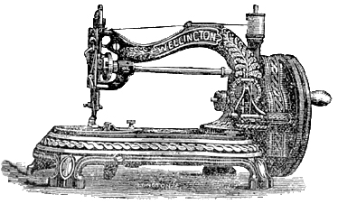
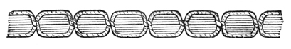

THE NEEDLEBAR
Manuals Section
DIRECTIONS
FOR OPERATING
BRADBURY & CO.'S
WELLINGTON HAND LOCK-STITCH
Shuttle Sewing Machine

BRADBURY & CO. LIMITED,
WELLINGTON WORKS, OLDHAM
PART ONE
INSTRUCTIONS
TO THE LEARNER
On receiving the machine, notice particularly the way it is threaded up for sewing - this is very important to beginners. Read the instructions carefully, to make yourself familiar with the different parts of the machine before commencing to sew; don't be hurried; but master every detail; success will be certain. If you purchase the machine from an Agent near, take care that he gives thorough instructions, and if any difficulties arise, apply to him at once for assistance; but this will not be necessary if you follow out the directions carefully.
TO OIL THE MACHINE
This is an important matter, and should be attended to. It is safe to oil every part where there is any friction. There are some parts that require special attention, viz: the shaft bearings, needle cam, shuttle cam, needle bar, and stud for driving wheel. After oiling the parts thoroughly, wipe the lower end of the needle bar and needle, also any other part that is likely to be touched with the hands or by the work, otherwise it may become soiled.
TO SET THE NEEDLE
The needle will have two grooves in it, one long and one short. In placing it in the needle bar, see that the short groove be next to the shuttle. As a guide for the operator, a mark is cut near the top of the needle bar, and when the needle is properly set, its eye will be level with the cloth plate, and the mark on the bar be level with top of frame. Make the needle secure in this position by the needle screw or nut. The needle should then descend in the centre of needle plate hole; if it does not do so, spring it a little with the thumb till it passes in the centre.
TO THREAD THE NEEDLE
Place the reel of thread on bobbin pin, pass the thread through the wire guides, then down the front, between the tension washers, up and through the hole in the end of the take-up lever, down and through the hole at bottom of front plate, and lastly, through the eye of the needle from left to right, leaving about three inches of thread through to commence sewing with.
COMMENCING TO SEW
Place the material to be sewn on the cloth plate; lower the presser foot by the lift handle; turn the handle so that the wheel runs from you - this will give the proper motion - always taking care the presser foot is up when not sewing, and down when sewing.
TO TAKE OUT THE SHUTTLE
Draw back the slide in cloth plate, and turn the wheel until the shuttle be at the opening at the back, it can then easily be taken out by taking hold of the thread, if any; if empty, by using a pin or other small article in the hole at its heel.
TO REGULATE THE STITCH
Slacken the milled head nut at the right hand of table; to make a shorter stitch, move it to the left; for a longer stitch, move it to the right, as indicated on the table; again secure it by screwing it fast for the desired length of stitch.
TO REGULATE THE TENSIONS
This is simply done by turning the small screw in the nose of the shuttle to the left for a slacker, or to the right for a tighter tension; after an even tension is obtained it will seldom require altering.
A special small screw driver is provided for this purpose.
The stitch, to be perfect, must have the same appearance on both sides, thus:

If the shuttle thread is too tight and the needle thread too slack, the under thread will lie straight, thus:

Tighten the top tension by screwing the milled but towards you; on the other hand, if the shuttle thread is too slack, or draws off too easily, and the upper thread too tight, the shuttle thread will be drawing up through the fabric, and the upper side will lie straight, thus:
The tension of the shuttle thread is regulated by a screw near the point of the shuttle. Care should be taken that it is not too tight, but that it pulls freely, yet not too slack. Glazed cotton should not be used in either needle or shuttle.
TO USE THE PATENT SELF-ACTING REEL WINDER
First disconnect the fly-wheel by withdrawing the milled head pin near the handle, and slightly turning it a little, the machine will thus be motionless during the process of winding; then place the bobbin to wind from on the wire arm behind the machine, pass the thread over to the front washers and between the two tension washers, and under the wire guide on the radial arm; place the reel in its position by pushing down the presser plate and turning it a little to the left; pull at the loose piston by the small milled nut, then place the reel end into the spindle - the hole fitting the small pin - put the thread through the hole in the reel end at the left hand, leaving about an inch of thread through. Then put the presser plate in position between the two collars of the reel; then push the winder in gear with the large wheel; commence to wind, taking care to turn the same way as when sewing (or you can wind whilst the sewing is being done), commencing at the left-hand side of the reel. Continue to wind without touching the thread till the reel is full, then pull the winder from out of gear, take out the reel; it is then ready for the shuttle.
TO THREAD THE SHUTTLE
Insert the reel first at the pointed end of the shuttle, then press the other end into place. Having the thread coming upwards from the underside of the reel on the screw side, pass it behind the bar, down the slot in the flat spring inside the shuttle, then under the spring on the outside, at the heel end of the shuttle, leaving about two inches of thread out to commence sewing with.
TO PLACE THE SHUTTLE IN ITS POSITION
Draw back the small slide in cloth plate, turn the wheel until the shuttle carrier comes to the opening at the back, put the shuttle in the carrier (with the point towards your) leaving about three inches of thread out of the shuttle, then close the slide.
TO BRING UP THE SHUTTLE THREAD
Before commencing to sew, it is necessary to bring up the shuttle thread (the needle being threaded). Take hold of the handle with the right hand, and the needle thread with the other, keeping it slack, so as not to print the needle; turn the wheel till the needle has gone down and up again; this will have brought up the shuttle thread through the needle hole, after which it is then ready for work.
Part Two | Part Three | Part Four
Back to Main Index